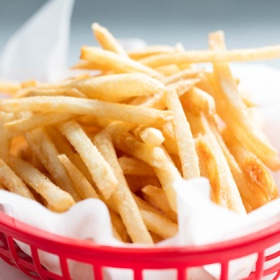

← All recipes
Crispy French Fries

Servings: 4 servings · Cook: 30 mins
Ingredients
- 2 pounds russet potatoes (900 g; about 4 large potatoes), peeled and cut into 1/4-inch by 1/4-inch fries (keep raw potato sticks submerged in a bowl of water after cutting)
- 2 tablespoons (30 ml) distilled white vinegar
- Kosher salt
- 2 quarts (1.9 L) peanut oil
Directions
- Place potatoes and vinegar in a saucepan and add 2 quarts (1.9L) water and 2 tablespoons (24g) salt. Bring to a boil over high heat. Boil for 10 minutes. Potatoes should be fully tender, but not falling apart. Drain and spread on a paper towel–lined rimmed baking sheet. Allow to dry for 5 minutes.
- Meanwhile, heat oil in a 6- or 7-quart Dutch oven or large wok over high heat to 400°F (204°C). Add one-third of fries to oil; oil temperature should drop to around 360°F (182°C). Cook for 50 seconds, agitating occasionally with a wire mesh spider, then remove to a second paper towel–lined rimmed baking sheet. Repeat with remaining potatoes (working in 2 more batches), allowing oil to return to 400°F after each addition. Allow potatoes to cool to room temperature, about 30 minutes. Continue with step 3, or, for best results, freeze potatoes at least overnight or up to 2 months.
- Return oil to 400°F over high heat. Fry half of potatoes until crisp and light golden brown, about 3 1/2 minutes, adjusting heat to maintain a temperature of around 360°F. Drain in a bowl lined with paper towels and season immediately with kosher salt. Cooked fries can be kept hot and crisp on a wire rack set in a sheet tray in a 200°F (90°C) oven while second batch is cooked. Serve immediately.
Original source: seriouseats.com